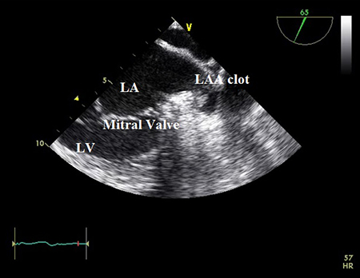

The 3 elements in the management of new-onset AF are:
[2]
January CT, Wann LS, Alpert JS, et al. 2014 AHA/ACC/HRS guideline for the management of patients with atrial fibrillation: a report of the American College of Cardiology/American Heart Association Task Force on Practice Guidelines and the Heart Rhythm Society. J Am Coll Cardiol. 2014;64:e1-e76.
http://content.onlinejacc.org/article.aspx?articleid
=1854231
http://www.ncbi.nlm.nih.gov/pubmed/24685669?tool=bestpractice.com
[34]
Kanji S, Stewart R, Fergusson DA, et al. Treatment of new-onset atrial fibrillation in noncardiac intensive care unit patients: a systematic review of randomized controlled trials. Crit Care Med. 2008;36
:1620-1624
.
http://www.ncbi.nlm.nih.gov/pubmed/18434899?tool=bestpractice.com
[35]
Okcun B, Yigit Z, Yildiz A, et al. What should be the primary treatment in atrial fibrillation: ventricular rate control or sinus rhythm control with long-term anticoagulation? J Int Med Res. 2009;37:464-471.
http://www.ncbi.nlm.nih.gov/pubmed/19383241?tool=bestpractice.com
[36]
Connolly SJ, Ezekowitz MD, Yusuf S, et al. Dabigatran versus warfarin in patients with atrial fibrillation. N Engl J Med. 2009;361
:1139-1151
(erratum in: N Engl J Med. 2010;363:1877).
http://www.nejm.org/doi/full/10.1056/NEJMoa0905561#t=article
http://www.ncbi.nlm.nih.gov/pubmed/19717844?tool=bestpractice.com
-
Ventricular rate control
-
Restoration and maintenance of sinus rhythm
-
Prevention of thromboembolic events.
Management of new-onset AF depends on the nature of its presentation, so the urgency of the treatment required should be assessed. Most cases of new-onset AF revert to sinus rhythm spontaneously, but do require adequate ventricular rate control with drugs such as beta-blockers, calcium-channel blockers, and occasionally digoxin. Cases that revert spontaneously usually do so in the first 24 hours.
[4]
Prystowsky EN, Benson DW Jr, Fuster V, et al. Management of patients with atrial fibrillation: a statement for healthcare professionals from the Subcommittee on Electrocardiography and Electrophysiology, American Heart Association. Circulation. 1996 Mar 15;93(6):1262-77.
http://circ.ahajournals.org/content/93/6/1262.long
http://www.ncbi.nlm.nih.gov/pubmed/8653857?tool=bestpractice.com
Those patients who do not revert may require either direct current (DC) cardioversion or pharmacological cardioversion. Depending on further risks for AF, patients may require treatment with various anti-arrhythmic agents to prevent AF. Among the available anti-arrhythmic agents, dronedarone, a multichannel blocker that inhibits the sodium, potassium, and calcium channels and has non-competitive anti-adrenergic activity similar to sotalol, propafenone, and flecainide, has lower efficacy than amiodarone to maintain sinus rhythm.
[37]
Singh BN, Connolly SJ, Crijns HJ, et al; EURIDIS and ADONIS Investigators. Dronedarone for maintenance of sinus rhythm in atrial fibrillation or flutter. N Engl J Med. 2007;357:987-999.
http://www.nejm.org/doi/full/10.1056/NEJMoa054686#t=article
http://www.ncbi.nlm.nih.gov/pubmed/17804843?tool=bestpractice.com
[38]
Le Heuzey JY, De Ferrari GM, Radzik D, et al. A short-term, randomized, double-blind, parallel-group study to evaluate the efficacy and safety of dronedarone versus amiodarone in patients with persistent atrial fibrillation: the DIONYSOS study. J Cardiovasc Electrophysiol. 2010;21:597-605.
http://www.ncbi.nlm.nih.gov/pubmed/20384650?tool=bestpractice.com
[39]
Hohnloser SH, Crijns HJ, van Eickels M, et al. Effect of dronedarone on cardiovascular events in atrial fibrillation. N Engl J Med. 2009;360:668-678 (erratum in: N Engl J Med. 2009;360:2487).
http://www.ncbi.nlm.nih.gov/pubmed/19213680?tool=bestpractice.com
[40]
National Institute for Health and Care Excellence. Dronedarone for the treatment of non-permanent atrial fibrillation. August 2010. http://www.nice.org.uk (last accessed 8 January 2016).
http://guidance.nice.org.uk/ta197
New-onset AF may be the first symptomatic presentation of paroxysmal AF, and it is necessary to perform transoesophageal echocardiography (TOE) to rule out left atrial (LA) clots before cardioversion.

[Figure caption and citation for the preceding image starts]:
Transoesophageal echocardiogram showing left atrial appendage clot. LA=left atrium; LAA=left atrial appendage; LV=left ventricle.
From the collection of Dr Bharat Kantharia
[Citation ends].
Many patients require anticoagulation before, during, and after cardioversion to prevent thromboembolic events. Because warfarin takes several days to have a therapeutic effect, patients presenting with new-onset AF treated with warfarin are treated with intravenous heparin (activated partial thromboplastin time [aPTT] of 45-60 seconds) or subcutaneous low molecular weight heparin while they are awaiting cardioversion and being evaluated for long-term anticoagulation.
Several direct oral anticoagulants (DOACs) are approved for stroke prevention in patients with non-valvular AF.
[41]
National Institute for Health and Care Excellence. Rivaroxaban for the prevention of stroke and systemic embolism in people with atrial fibrillation. May 2012. http://www.nice.org.uk (last accessed 8 January 2016).
http://guidance.nice.org.uk/TA256
These DOACs are non-vitamin K-dependent and they fall into two classes: oral direct thrombin inhibitors and oral direct factor Xa inhibitors.
[42]
O'Dell KM, Igawa D, Hsin J. New oral anticoagulants for atrial fibrillation: a review of clinical trials. Clin Ther. 2012;34:894-901.
http://www.ncbi.nlm.nih.gov/pubmed/22417716?tool=bestpractice.com
Dabigatran, an oral direct thrombin inhibitor, was compared with warfarin in the RE-LY trial. In the trial, dabigatran was associated with lower rates of stroke and systemic embolism compared with warfarin but had similar rates of major haemorrhage. At a lower dose of dabigatran, the rates of stroke and systemic embolism were similar to those for warfarin. The rate of MI was higher with both doses of dabigatran than with warfarin.
[36]
Connolly SJ, Ezekowitz MD, Yusuf S, et al. Dabigatran versus warfarin in patients with atrial fibrillation. N Engl J Med. 2009;361
:1139-1151
(erratum in: N Engl J Med. 2010;363:1877).
http://www.nejm.org/doi/full/10.1056/NEJMoa0905561#t=article
http://www.ncbi.nlm.nih.gov/pubmed/19717844?tool=bestpractice.com
[43]
Miller CS, Grandi SM, Shimony A, et al. Meta-analysis of efficacy and safety of new oral anticoagulants (dabigatran, rivaroxaban, apixaban) versus warfarin in patients with atrial fibrillation. Am J Cardiol. 2012;110:453-460.
http://www.ncbi.nlm.nih.gov/pubmed/22537354?tool=bestpractice.com
[42]
O'Dell KM, Igawa D, Hsin J. New oral anticoagulants for atrial fibrillation: a review of clinical trials. Clin Ther. 2012;34:894-901.
http://www.ncbi.nlm.nih.gov/pubmed/22417716?tool=bestpractice.com
Dabigatran may be associated with an increased risk of stroke, heart attack, and blood clot in patients with mechanical prosthetic valves and, therefore, should not be used in these patients.
FDA: dabigatran safety alert
Based on the current evidence, it is reasonable to use dabigatran as a first-line agent or subsequent replacement for warfarin in suitable patients who do not have marked renal insufficiency, and who do not have mechanical prosthetic valves.
[43]
Miller CS, Grandi SM, Shimony A, et al. Meta-analysis of efficacy and safety of new oral anticoagulants (dabigatran, rivaroxaban, apixaban) versus warfarin in patients with atrial fibrillation. Am J Cardiol. 2012;110:453-460.
http://www.ncbi.nlm.nih.gov/pubmed/22537354?tool=bestpractice.com
[42]
O'Dell KM, Igawa D, Hsin J. New oral anticoagulants for atrial fibrillation: a review of clinical trials. Clin Ther. 2012;34:894-901.
http://www.ncbi.nlm.nih.gov/pubmed/22417716?tool=bestpractice.com
[44]
National Institute for Health and Care Excellence. Dabigatran etexilate for the prevention of stroke and systemic embolism in atrial fibrillation. March 2012. http://www.nice.org.uk (last accessed 8 January 2016).
http://www.nice.org.uk/guidance/TA249
The oral direct factor Xa inhibitors rivaroxaban, apixaban, and edoxaban were compared with warfarin for stroke prevention in patients with non-valvular AF in the ROCKET AF trial,
[45]
Patel MR, Mahaffey KW, Garg J, et al. Rivaroxaban versus warfarin in nonvalvular atrial fibrillation. N Engl J Med. 2011;365:883-891.
http://www.nejm.org/doi/full/10.1056/NEJMoa1009638#t=article
http://www.ncbi.nlm.nih.gov/pubmed/21830957?tool=bestpractice.com
ARISTOTLE trial,
[46]
Granger CB, Alexander JH, McMurray JJ, et al. Apixaban versus warfarin in patients with atrial fibrillation. N Engl J Med. 2011;365:981-992.
http://www.nejm.org/doi/full/10.1056/NEJMoa1107039#t=article
http://www.ncbi.nlm.nih.gov/pubmed/21870978?tool=bestpractice.com
and the ENGAGE- and ENSURE-AF trials,
[47]
Giugliano RP, Ruff CT, Braunwald E, et al. Edoxaban versus warfarin in patients with atrial fibrillation. N Engl J Med. 2013;369
:2093-2104
.
http://www.nejm.org/doi/full/10.1056/NEJMoa1310907#t=article
http://www.ncbi.nlm.nih.gov/pubmed/24251359?tool=bestpractice.com
[48]
Goette A, Merino JL, Ezekowitz MD, et al. Edoxaban versus enoxaparin-warfarin in patients undergoing cardioversion of atrial fibrillation (ENSURE-AF): a randomised, open-label, phase 3b trial. Lancet. 2016;388
:1995-2003
.
http://www.ncbi.nlm.nih.gov/pubmed/27590218?tool=bestpractice.com
respectively. These trials, together with results from meta-analyses, have shown that DOACs are non-inferior to warfarin for stroke prevention in patients with non-valvular AF.
[43]
Miller CS, Grandi SM, Shimony A, et al. Meta-analysis of efficacy and safety of new oral anticoagulants (dabigatran, rivaroxaban, apixaban) versus warfarin in patients with atrial fibrillation. Am J Cardiol. 2012;110:453-460.
http://www.ncbi.nlm.nih.gov/pubmed/22537354?tool=bestpractice.com
[49]
Caldeira D, Rodrigues FB, Barra M, et al. Non-vitamin K antagonist oral anticoagulants and major bleeding-related fatality in patients with atrial fibrillation and venous thromboembolism: a systematic review and meta-analysis. Heart. 2015;101
:1204-1211
.
http://www.ncbi.nlm.nih.gov/pubmed/26037103?tool=bestpractice.com
[  ]
How do factor Xa inhibitors compare with warfarin for prevention of cerebral and systemic embolism in people with atrial fibrillation (AF)?
/cca.html?targetUrl=https://www.cochranelibrary.com/cca/doi/10.1002/cca.2101/full
Show me the answer
]
How do factor Xa inhibitors compare with warfarin for prevention of cerebral and systemic embolism in people with atrial fibrillation (AF)?
/cca.html?targetUrl=https://www.cochranelibrary.com/cca/doi/10.1002/cca.2101/full
Show me the answer
The efficacy and safety of anticoagulation with warfarin is highly dependent on the quality of anticoagulation control, as reflected by the average time in therapeutic range (TTR) of INR 2 to 3. The SAMe-TT(2)R(2) scoring system (based on sex, age, medical history, treatment interactions, tobacco use, and race) is a tool that may help identify anticoagulation-naive patients who are less likely to maintain TTR >70% and who could, therefore, be managed with DOACs instead of warfarin.
[50]
Gallego P, Roldán V, Marin F, et al. SAMe-TT2R2 score, time in therapeutic range, and outcomes in anticoagulated patients with atrial fibrillation. Am J Med. 2014;127
:1083-1088
.
http://www.ncbi.nlm.nih.gov/pubmed/24858062?tool=bestpractice.com
[51]
Lip GY, Haguenoer K, Saint-Etienne C, et al. Relationship of the SAMe-TT(2)R(2) score to poor-quality anticoagulation, stroke, clinically relevant bleeding, and mortality in patients with atrial fibrillation. Chest. 2014;146:719-726.
http://journal.publications.chestnet.org/article.aspx?articleid
=1860569
http://www.ncbi.nlm.nih.gov/pubmed/24722973?tool=bestpractice.com
The choice of anticoagulation strategy depends on the presentation. Factors in the patient's presentation and diagnostic assessment which guide appropriate treatment include the following:
-
Whether the patient is haemodynamically stable or unstable
-
If haemodynamically stable, whether the patient is symptomatic or asymptomatic
-
If symptomatic, the onset of the symptoms (<48 hours, ≥48 hours, or unknown)
-
The presence of associated heart failure
-
The presence of a thrombus on TOE
-
If a thrombus is absent on TOE, thromboembolic risk is stratified.
Atrial Fibrillation CHA(2)DS(2)-VASc Score for Stroke Risk
Need for hospital admission
Patients who present with new-onset AF who are at low risk for major clinical consequences (young patients with no structural heart diseases, no major cardiac symptoms, or haemodynamic compromise) may be discharged directly from the emergency department after stable sinus rhythm is restored.
Admission to hospital is indicated for the following patient groups:
-
Patients with underlying heart disease who have haemodynamic consequences or symptoms of angina, heart failure, or syncope or who are at risk for a complication resulting from therapy of the arrhythmia
-
Older patients
-
Associated or precipitant medical conditions that require further treatment, such as heart failure, pulmonary problems (e.g., pneumonia, pulmonary embolism), hypertension, or hyperthyroidism.
Haemodynamically unstable AF
AF with a rapid ventricular rate causing ongoing chest pain, hypotension, shortness of breath, dizziness, or syncope requires immediate DC cardioversion. This is performed under adequate short-acting general anaesthesia and involves delivery of an electrical shock synchronised with the intrinsic activity of the heart by sensing the R wave of the ECG (i.e., synchronised). The energy output for successful termination of new-onset AF varies from 200 J to a maximum of 400 J depending on the body size and the presence of other co-morbid conditions. Lower energy of 100 J may be used as the starting level when biphasic energy is used.
For patients with haemodynamically unstable AF, initiation of anticoagulation should not delay DC cardioversion. It is reasonable to consider administering intravenous bolus of unfractionated heparin followed by infusion, or low molecular weight heparin or DOAC and to continue this after cardioversion unless contraindicated.
[2]
January CT, Wann LS, Alpert JS, et al. 2014 AHA/ACC/HRS guideline for the management of patients with atrial fibrillation: a report of the American College of Cardiology/American Heart Association Task Force on Practice Guidelines and the Heart Rhythm Society. J Am Coll Cardiol. 2014;64:e1-e76.
http://content.onlinejacc.org/article.aspx?articleid
=1854231
http://www.ncbi.nlm.nih.gov/pubmed/24685669?tool=bestpractice.com
Haemodynamically stable AF: symptomatic
Patients require rate-control therapy until cardioversion is successful. If there is no evidence of heart failure, beta-blockers (intravenous esmolol, propranolol, metoprolol tartrate, or oral atenolol, metoprolol succinate, nadolol, propranolol, bisoprolol, carvedilol) or non-dihydropyridine calcium-channel blockers (diltiazem, verapamil) are the preferred choice. If rate control is inadequate with monotherapy, a combination of a beta-blocker and calcium-channel blockers may be used. Patient should be carefully monitored to prevent excess AV nodal blockade.
[1]
Fuster V, Rydén LE, Cannom DS, et al. 2011 ACCF/AHA/HRS focused updates incorporated into the ACC/AHA/ESC 2006 guidelines for the management of patients with atrial fibrillation: a report of the American College of Cardiology Foundation/American Heart Association Task Force on practice guidelines. Circulation. 2011;123:e269-e367.
http://circ.ahajournals.org/content/123/10/e269.long
http://www.ncbi.nlm.nih.gov/pubmed/21382897?tool=bestpractice.com
If there is evidence of heart failure, certain drugs such as calcium-channel blockers, and most anti-arrhythmic drugs except digoxin
Control of heart rate in haemodynamically stable acute-onset AF: there is medium-quality evidence that, compared with placebo, digoxin was more effective at controlling heart rate at 30 minutes to 2 hours in people with AF lasting up to 7 days.
Randomized controlled trials (RCTs) of <200 participants, methodologically flawed RCTs of >200 participants, methodologically flawed systematic reviews (SRs) or good quality observational (cohort) studies.
or amiodarone,
Control of heart rate in haemodynamically stable acute-onset AF: there is poor-quality evidence that, compared with digoxin, amiodarone may be as effective at controlling heart rate at 30 minutes.
Poor quality observational (cohort) studies or methodologically flawed randomized controlled trials (RCTs) of <200 participants.
should not be used. Digoxin is the preferred drug for rate control in patients with AF and heart failure. Amiodarone has multiclass (I to IV) anti-arrhythmic properties, and can be used for rate control in heart failure patients only if digoxin is contraindicated
Dronedarone, a multichannel blocker with non-competitive anti-adrenergic activity, is similar to amiodarone but less effective.
[37]
Singh BN, Connolly SJ, Crijns HJ, et al; EURIDIS and ADONIS Investigators. Dronedarone for maintenance of sinus rhythm in atrial fibrillation or flutter. N Engl J Med. 2007;357:987-999.
http://www.nejm.org/doi/full/10.1056/NEJMoa054686#t=article
http://www.ncbi.nlm.nih.gov/pubmed/17804843?tool=bestpractice.com
[52]
Piccini JP, Hasselblad V, Peterson ED, et al. Comparative efficacy of dronedarone and amiodarone for the maintenance of sinus rhythm in patients with atrial fibrillation. J Am Coll Cardiol. 2009;54
:1089-1095
.
http://www.ncbi.nlm.nih.gov/pubmed/19744618?tool=bestpractice.com
It is approved in Europe for the maintenance of sinus rhythm after successful cardioversion in clinically stable adult patients with paroxysmal or persistent AF and associated cardiovascular risk factors. It can be used in patients with NYHA class I or II heart failure, but is contraindicated in those with NYHA class IV heart failure or NYHA class II-III heart failure with a recent decompensation requiring admission to hospital or referral to a specialised heart failure clinic. It is also contraindicated in patients with permanent AF.
Patients presenting with new-onset AF of <48 hours' duration and no evidence of LA thrombus on TOE should have DC
Conversion to sinus rhythm in haemodynamically stable acute-onset AF: there is good-quality evidence that electrical cardioversion is more effective than intravenous propafenone at increasing the proportion of patients who convert to sinus rhythm within 6 hours in those with haemodynamically stable new-onset AF of <48 hours duration. Consensus is that it should be used in those with haemodynamically unstable new-onset AF.
Systematic reviews (SRs) or randomized controlled trials (RCTs) of >200 participants.
or pharmacological cardioversion. DC cardioversion is fast, safe, and efficient. Pharmacological cardioversion is accomplished with the use of anti-arrhythmic agents.
[53]
Heldal M, Atar D. Pharmacological conversion of recent-onset atrial fibrillation: a systematic review. Scand Cardiovasc J Suppl. 2013;47:2-10.
http://www.ncbi.nlm.nih.gov/pubmed/23067130?tool=bestpractice.com
However, these must be used with caution as they may cause bradycardia or tachyarrhythmias.
[ ]
What are the benefits and harms of antiarrhythmics for maintaining sinus rhythm after cardioversion of atrial fibrillation?
/cca.html?targetUrl=https://cochranelibrary.com/cca/doi/10.1002/cca.1887/full
Show me the answer
Anti-arrhythmic agents with variable, but demonstrated, efficacy for cardioversion of new-onset AF include flecainide,
Conversion to sinus rhythm in haemodynamically stable acute-onset AF: there is medium-quality evidence that, compared with placebo, oral or intravenous flecainide was more effective at increasing the rate of conversion to sinus rhythm at 1 to 24 hours in people with new-onset AF. There is poor-quality evidence that oral or intravenous flecainide may be more effective than intravenous amiodarone at increasing conversion rates to sinus rhythm at 1 to 12 hours. There is poor-quality evidence that oral or intravenous flecainide may be as effective as oral or intravenous propafenone at conversion to sinus rhythm at 1 to 12 hours.
Randomized controlled trials (RCTs) of <200 participants, methodologically flawed RCTs of >200 participants, methodologically flawed systematic reviews (SRs) or good quality observational (cohort) studies.
propafenone,
Conversion to sinus rhythm in haemodynamically stable acute-onset AF: there is good-quality evidence that, compared with placebo, oral or intravenous propafenone was more effective at increasing the proportion of patients who convert to sinus rhythm within 24 hours in those with new-onset AF. There is poor-quality evidence that intravenous propafenone may be as effective as intravenous digoxin at increasing conversion to sinus rhythm at 1 hour. There is also poor-quality evidence that oral or intravenous propafenone may be as effective as oral or intravenous flecainide at increasing conversion to sinus rhythm at 1 to 12 hours. Compared with amiodarone, it is not known in the poor-quality evidence available whether propafenone is more or less effective at increasing conversion to sinus rhythm at 1 to 48 hours in patients with new-onset AF. Adverse effects: propafenone and flecainide are not used in patients with known or suspected ischaemic heart disease, because these drugs may cause arrhythmias.
Systematic reviews (SRs) or randomized controlled trials (RCTs) of >200 participants.
ibutilide, vernakalant,
[54]
Roy D, Pratt CM, Torp-Pedersen C, et al; Atrial Arrhythmia Conversion Trial Investigators. Vernakalant hydrochloride for rapid conversion of atrial fibrillation: a phase 3, randomized, placebo-controlled trial. Circulation. 2008;117
:1518-1525
.
http://circ.ahajournals.org/cgi/content/full/117/12/1518
http://www.ncbi.nlm.nih.gov/pubmed/18332267?tool=bestpractice.com
[55]
Kowey PR, Dorian P, Mitchell LB, et al; Atrial Arrhythmia Conversion Trial Investigators. Vernakalant hydrochloride for the rapid conversion of atrial fibrillation after cardiac surgery: a randomized, double-blind, placebo-controlled trial. Circ Arrhythm Electrophysiol. 2009;2:652-659.
http://circep.ahajournals.org/content/2/6/652.long
http://www.ncbi.nlm.nih.gov/pubmed/19948506?tool=bestpractice.com
[56]
Camm AJ, Capucci A, Hohnloser SH, et al; AVRO Investigators. A randomized active-controlled study comparing the efficacy and safety of vernakalant to amiodarone in recent-onset atrial fibrillation. J Am Coll Cardiol. 2011;57:313-321.
http://www.ncbi.nlm.nih.gov/pubmed/21232669?tool=bestpractice.com
dronedarone,
[37]
Singh BN, Connolly SJ, Crijns HJ, et al; EURIDIS and ADONIS Investigators. Dronedarone for maintenance of sinus rhythm in atrial fibrillation or flutter. N Engl J Med. 2007;357:987-999.
http://www.nejm.org/doi/full/10.1056/NEJMoa054686#t=article
http://www.ncbi.nlm.nih.gov/pubmed/17804843?tool=bestpractice.com
[38]
Le Heuzey JY, De Ferrari GM, Radzik D, et al. A short-term, randomized, double-blind, parallel-group study to evaluate the efficacy and safety of dronedarone versus amiodarone in patients with persistent atrial fibrillation: the DIONYSOS study. J Cardiovasc Electrophysiol. 2010;21:597-605.
http://www.ncbi.nlm.nih.gov/pubmed/20384650?tool=bestpractice.com
[39]
Hohnloser SH, Crijns HJ, van Eickels M, et al. Effect of dronedarone on cardiovascular events in atrial fibrillation. N Engl J Med. 2009;360:668-678 (erratum in: N Engl J Med. 2009;360:2487).
http://www.ncbi.nlm.nih.gov/pubmed/19213680?tool=bestpractice.com
[40]
National Institute for Health and Care Excellence. Dronedarone for the treatment of non-permanent atrial fibrillation. August 2010. http://www.nice.org.uk (last accessed 8 January 2016).
http://guidance.nice.org.uk/ta197
and amiodarone.
Conversion to sinus rhythm in haemodynamically stable acute-onset AF: there is poor-quality evidence that, compared with placebo, amiodarone may be more effective at increasing conversion to sinus rhythm at 1 to 8 hours in patients with new-onset AF who are haemodynamically stable. When compared with digoxin, amiodarone may be as effective at increasing conversion to sinus rhythm at 1 to 48 hours. Compared with sotalol, amiodarone may be as effective at increasing conversion to sinus rhythm at 3 hours. Compared with flecainide, intravenous amiodarone may be less effective than oral or intravenous flecainide at increasing conversion to sinus rhythm at 1 to 12 hours. Compared with propafenone, it is not known whether amiodarone is more or less effective than propafenone at increasing conversion to sinus rhythm at 1 to 48 hours in patients with new-onset AF. Adverse effects: amiodarone is associated with adverse effects, including bradycardia and hypotension.
Poor quality observational (cohort) studies or methodologically flawed randomized controlled trials (RCTs) of <200 participants.
Conversion to sinus rhythm in haemodynamically stable acute-onset AF: there is medium-quality evidence that, compared with verapamil, amiodarone was more effective at increasing conversion to sinus rhythm at 3 hours.
Randomized controlled trials (RCTs) of <200 participants, methodologically flawed RCTs of >200 participants, methodologically flawed systematic reviews (SRs) or good quality observational (cohort) studies.
Class III agents (including amiodarone and ibutilide) are less efficacious than class IC agents (flecainide and propafenone) in conversion to sinus rhythm.
[57]
Kochiadakis GE, Igoumenidis NE, Hamilos ME, et al. A comparative study of the efficacy and safety of procainamide versus propafenone versus amiodarone for the conversion of recent-onset atrial fibrillation. Am J Cardiol. 2007;99
:1721-1725
.
http://www.ncbi.nlm.nih.gov/pubmed/17560882?tool=bestpractice.com
[58]
Xanthos T, Bassiakou E, Vlachos IS, et al. Intravenous and oral administration of amiodarone for the treatment of recent onset atrial fibrillation after digoxin administration. Int J Cardiol. 2007;121:291-295.
http://www.ncbi.nlm.nih.gov/pubmed/17434635?tool=bestpractice.com
[59]
Xanthos T, Prapa V, Papadimitriou D, et al. Comparative study of intravenous amiodarone and procainamide in the treatment of atrial fibrillation of recent onset. Minerva Cardioangiol. 2007;55:433-441.
http://www.ncbi.nlm.nih.gov/pubmed/17653020?tool=bestpractice.com
Intravenous vernakalant has demonstrated superior efficacy to amiodarone for acute conversion of recent-onset AF.
[56]
Camm AJ, Capucci A, Hohnloser SH, et al; AVRO Investigators. A randomized active-controlled study comparing the efficacy and safety of vernakalant to amiodarone in recent-onset atrial fibrillation. J Am Coll Cardiol. 2011;57:313-321.
http://www.ncbi.nlm.nih.gov/pubmed/21232669?tool=bestpractice.com
Oral vernakalant appears to be effective in preventing AF recurrence post-cardioversion.
[60]
Torp-Pedersen C, Raev DH, Dickinson G, et al. A randomized, placebo-controlled study of vernakalant (oral) for the prevention of atrial fibrillation recurrence after cardioversion. Circ Arrhythm Electrophysiol. 2011;4:637-643.
http://circep.ahajournals.org/content/4/5/637.long
http://www.ncbi.nlm.nih.gov/pubmed/21841207?tool=bestpractice.com
The strategy for managing anticoagulation in patients presenting with new-onset AF of <48 hours' duration and with no evidence of LA thrombus is as follows:
-
If CHA2DS2-VASc score is 0-1, no anticoagulation is required.
-
If CHA2DS2-VASc score is ≥2, intravenous heparin (aPTT of 45-60 seconds) or subcutaneous low molecular weight heparin should be started before cardioversion. Once sinus rhythm is restored, the patients should be started on warfarin and heparin continued until the warfarin levels are therapeutic (INR 2-3). In selected patients warfarin may be replaced with a DOAC such as dabigatran, rivaroxaban, apixaban, or edoxaban.
[61]
Dentali F, Riva N, Crowther M, et al. Efficacy and safety of the novel oral anticoagulants in atrial fibrillation: a systematic review and meta-analysis of the literature. Circulation. 2012;126
:2381-2391
.
http://circ.ahajournals.org/content/126/20/2381.long
http://www.ncbi.nlm.nih.gov/pubmed/23071159?tool=bestpractice.com
DOACs should not be used in patients with mechanical prosthetic valves. Dabigatran should not be used in patients with marked renal insufficiency. The concomitant use of DOACs with heparin (including low molecular weight heparin), heparin derivatives, or warfarin is contraindicated.
-
Anticoagulation is continued for at least 4 weeks after cardioversion, and may be required for longer in some patients.
[2]
January CT, Wann LS, Alpert JS, et al. 2014 AHA/ACC/HRS guideline for the management of patients with atrial fibrillation: a report of the American College of Cardiology/American Heart Association Task Force on Practice Guidelines and the Heart Rhythm Society. J Am Coll Cardiol. 2014;64:e1-e76.
http://content.onlinejacc.org/article.aspx?articleid
=1854231
http://www.ncbi.nlm.nih.gov/pubmed/24685669?tool=bestpractice.com
[62]
Sorino M, Colonna P, De Luca L, et al. Post-cardioversion transesophageal echocardiography (POSTEC) strategy with the use of enoxaparin for brief anticoagulation in atrial fibrillation patients: the multicenter POSTEC trial (a pilot study). J Cardiovasc Med (Hagerstown). 2007;8
:1034-1042
.
http://www.ncbi.nlm.nih.gov/pubmed/18163016?tool=bestpractice.com
If the onset of symptoms is >48 hours or unknown and there is no evidence of LA thrombus on TOE, patients should have DC
Conversion to sinus rhythm in haemodynamically stable acute-onset AF: there is good-quality evidence that electrical cardioversion is more effective than intravenous propafenone at increasing the proportion of patients who convert to sinus rhythm within 6 hours in those with haemodynamically stable new-onset AF of <48 hours duration. Consensus is that it should be used in those with haemodynamically unstable new-onset AF.
Systematic reviews (SRs) or randomized controlled trials (RCTs) of >200 participants.
or pharmacological cardioversion, but the cardioversion should not be attempted until the patient is established on anticoagulation. CHA2DS2-VASc score also predicts risk of cardiovascular complications post cardioversion.
[63]
Grönberg T, Hartikainen JE, Nuotio I, et al. Anticoagulation, CHA2DS2VASc score, and thromboembolic risk of cardioversion of acute atrial fibrillation (from the FinCV study). Am J Cardiol. 2016;117
:1294-1298
.
http://www.ncbi.nlm.nih.gov/pubmed/26892448?tool=bestpractice.com
The strategy for managing anticoagulation in these patients is as follows:
-
If CHA2DS2-VASc score is 0-1, heparin should be started, and cardioversion should be delayed until the patient is established on heparin with a target activated partial thromboplastin time of 45 to 60 seconds. Following successful cardioversion, heparin can be discontinued. The decision to administer aspirin for long-term therapy in these patients should be individualised and discussed with the patient as no major consensus exists for those with a CHADS2 score of 1, or a CHA2DS2-VASc score of 1 due to sex risk (i.e., female patients).
[2]
January CT, Wann LS, Alpert JS, et al. 2014 AHA/ACC/HRS guideline for the management of patients with atrial fibrillation: a report of the American College of Cardiology/American Heart Association Task Force on Practice Guidelines and the Heart Rhythm Society. J Am Coll Cardiol. 2014;64:e1-e76.
http://content.onlinejacc.org/article.aspx?articleid
=1854231
http://www.ncbi.nlm.nih.gov/pubmed/24685669?tool=bestpractice.com
[10]
National Institute for Health and Care Excellence. Atrial fibrillation: management. 2014. https://www.nice.org.uk/guidance/cg180 (last accessed 8 January 2016).
https://www.nice.org.uk/guidance/cg180/resources/atrial-fibrillation-management-35109805981381
[64]
Lip GY, Skjøth F, Rasmussen LH, et al. Oral anticoagulation, aspirin, or no therapy in patients with nonvalvular AF with 0 or 1 stroke risk factor based on the CHA2DS2-VASc score. J Am Coll Cardiol. 2015;65
:1385-1394
.
http://www.ncbi.nlm.nih.gov/pubmed/25770314?tool=bestpractice.com
[65]
Chao TF, Liu CJ, Wang KL, et al. Should atrial fibrillation patients with 1 additional risk factor of the CHA2DS2-VASc score (beyond sex) receive oral anticoagulation? J Am Coll Cardiol. 2015;65:635-642.
http://www.ncbi.nlm.nih.gov/pubmed/25677422?tool=bestpractice.com
[66]
Joundi RA, Cipriano LE, Sposato LA, et al. Ischemic stroke risk in patients with atrial fibrillation and CHA2DS2-VASc score of 1: systematic review and meta-analysis. Stroke. 2016;47
:1364-1367
.
http://www.ncbi.nlm.nih.gov/pubmed/27026630?tool=bestpractice.com
AHA 2014 guidelines include aspirin as an option in this circumstance, while National Institute for Health and Care Excellence and European Society of Cardiology guidelines do not recommend aspirin.
[2]
January CT, Wann LS, Alpert JS, et al. 2014 AHA/ACC/HRS guideline for the management of patients with atrial fibrillation: a report of the American College of Cardiology/American Heart Association Task Force on Practice Guidelines and the Heart Rhythm Society. J Am Coll Cardiol. 2014;64:e1-e76.
http://content.onlinejacc.org/article.aspx?articleid
=1854231
http://www.ncbi.nlm.nih.gov/pubmed/24685669?tool=bestpractice.com
[3]
Kirchhof P, Benussi S, Kotecha D, et al. 2016 ESC Guidelines for the management of atrial fibrillation developed in collaboration with EACTS. Europace. 2016;18
:1609-1678
.
http://eurheartj.oxfordjournals.org/content/37/38/2893
http://www.ncbi.nlm.nih.gov/pubmed/27567465?tool=bestpractice.com
[10]
National Institute for Health and Care Excellence. Atrial fibrillation: management. 2014. https://www.nice.org.uk/guidance/cg180 (last accessed 8 January 2016).
https://www.nice.org.uk/guidance/cg180/resources/atrial-fibrillation-management-35109805981381
-
If CHA2DS2-VASc score is ≥2, concomitant heparin and warfarin therapy should be started, and heparin continued until the warfarin levels are therapeutic (INR 2-3).
[2]
January CT, Wann LS, Alpert JS, et al. 2014 AHA/ACC/HRS guideline for the management of patients with atrial fibrillation: a report of the American College of Cardiology/American Heart Association Task Force on Practice Guidelines and the Heart Rhythm Society. J Am Coll Cardiol. 2014;64:e1-e76.
http://content.onlinejacc.org/article.aspx?articleid
=1854231
http://www.ncbi.nlm.nih.gov/pubmed/24685669?tool=bestpractice.com
[22]
Peters NS, Schilling RJ, Kanagaratnam P, et al. Atrial fibrillation: strategies to control, combat, and cure. Lancet. 2002; 359;593-603.
http://www.ncbi.nlm.nih.gov/pubmed/11867130?tool=bestpractice.com
Anticoagulation with warfarin at the target INR should be established for 3 to 4 weeks before cardioversion is attempted.
[22]
Peters NS, Schilling RJ, Kanagaratnam P, et al. Atrial fibrillation: strategies to control, combat, and cure. Lancet. 2002; 359;593-603.
http://www.ncbi.nlm.nih.gov/pubmed/11867130?tool=bestpractice.com
Warfarin may be replaced with a DOAC (e.g., dabigatran, rivaroxaban, apixaban, or edoxaban) in selected patients such as those in whom low and ineffective TTR of warfarin can be predicted (i.e., using the SAMe-TT(2)R(2) scoring system), or those who refuse to take warfarin.
[50]
Gallego P, Roldán V, Marin F, et al. SAMe-TT2R2 score, time in therapeutic range, and outcomes in anticoagulated patients with atrial fibrillation. Am J Med. 2014;127
:1083-1088
.
http://www.ncbi.nlm.nih.gov/pubmed/24858062?tool=bestpractice.com
[51]
Lip GY, Haguenoer K, Saint-Etienne C, et al. Relationship of the SAMe-TT(2)R(2) score to poor-quality anticoagulation, stroke, clinically relevant bleeding, and mortality in patients with atrial fibrillation. Chest. 2014;146:719-726.
http://journal.publications.chestnet.org/article.aspx?articleid
=1860569
http://www.ncbi.nlm.nih.gov/pubmed/24722973?tool=bestpractice.com
[61]
Dentali F, Riva N, Crowther M, et al. Efficacy and safety of the novel oral anticoagulants in atrial fibrillation: a systematic review and meta-analysis of the literature. Circulation. 2012;126
:2381-2391
.
http://circ.ahajournals.org/content/126/20/2381.long
http://www.ncbi.nlm.nih.gov/pubmed/23071159?tool=bestpractice.com
DOACs should not be used in patients with mechanical prosthetic valves. Dabigatran should not be used in patients with marked renal insufficiency. The concomitant use of DOACs with heparin (including low molecular weight heparin), heparin derivatives, or warfarin is contraindicated.
-
Anticoagulation is continued for at least 4 weeks after cardioversion, and may be required for longer in some patients.
[2]
January CT, Wann LS, Alpert JS, et al. 2014 AHA/ACC/HRS guideline for the management of patients with atrial fibrillation: a report of the American College of Cardiology/American Heart Association Task Force on Practice Guidelines and the Heart Rhythm Society. J Am Coll Cardiol. 2014;64:e1-e76.
http://content.onlinejacc.org/article.aspx?articleid
=1854231
http://www.ncbi.nlm.nih.gov/pubmed/24685669?tool=bestpractice.com
[62]
Sorino M, Colonna P, De Luca L, et al. Post-cardioversion transesophageal echocardiography (POSTEC) strategy with the use of enoxaparin for brief anticoagulation in atrial fibrillation patients: the multicenter POSTEC trial (a pilot study). J Cardiovasc Med (Hagerstown). 2007;8
:1034-1042
.
http://www.ncbi.nlm.nih.gov/pubmed/18163016?tool=bestpractice.com
If there is evidence of LA thrombus on TOE, concomitant heparin and warfarin therapy should be started, and heparin continued until the warfarin levels are therapeutic (INR 2-3). Anticoagulation with warfarin at the target INR should be established for 3 to 4 weeks before cardioversion is attempted. Furthermore, a repeat TEE to assess for LA thrombus should be carried out before cardioversion is considered. DOACs such as dabigatran, rivaroxaban, apixaban, and edoxaban may be used as an alternative to warfarin and are associated with an overall increase in clinical benefit compared with warfarin.
[61]
Dentali F, Riva N, Crowther M, et al. Efficacy and safety of the novel oral anticoagulants in atrial fibrillation: a systematic review and meta-analysis of the literature. Circulation. 2012;126
:2381-2391
.
http://circ.ahajournals.org/content/126/20/2381.long
http://www.ncbi.nlm.nih.gov/pubmed/23071159?tool=bestpractice.com
DOACs should not be used in patients with mechanical prosthetic valves. Dabigatran should not be used in patients with marked renal insufficiency. The concomitant use of DOACs with heparin (including low molecular weight heparin), heparin derivatives, or warfarin is contraindicated. Anticoagulation is continued for at least 4 weeks after cardioversion, and may be required for longer in some patients.
[2]
January CT, Wann LS, Alpert JS, et al. 2014 AHA/ACC/HRS guideline for the management of patients with atrial fibrillation: a report of the American College of Cardiology/American Heart Association Task Force on Practice Guidelines and the Heart Rhythm Society. J Am Coll Cardiol. 2014;64:e1-e76.
http://content.onlinejacc.org/article.aspx?articleid
=1854231
http://www.ncbi.nlm.nih.gov/pubmed/24685669?tool=bestpractice.com
[62]
Sorino M, Colonna P, De Luca L, et al. Post-cardioversion transesophageal echocardiography (POSTEC) strategy with the use of enoxaparin for brief anticoagulation in atrial fibrillation patients: the multicenter POSTEC trial (a pilot study). J Cardiovasc Med (Hagerstown). 2007;8
:1034-1042
.
http://www.ncbi.nlm.nih.gov/pubmed/18163016?tool=bestpractice.com
Haemodynamically stable AF: asymptomatic
Patients with CHA2DS2-VASc score 0-1 can be observed. Most cases of new-onset AF revert to sinus rhythm spontaneously, usually in the first 24 hours. If AF does not resolve spontaneously, rate-control therapy is required until cardioversion is successful. Cardioversion may be attempted without the need for anticoagulation.
Patients with a CHA2DS2-VASc score ≥2 require immediate anticoagulation. Concomitant heparin and warfarin therapy should be started, and heparin continued until the warfarin levels are therapeutic (INR 2-3). In selected patients warfarin may be replaced with a DOAC such as dabigatran, rivaroxaban, apixaban, or edoxaban.
[61]
Dentali F, Riva N, Crowther M, et al. Efficacy and safety of the novel oral anticoagulants in atrial fibrillation: a systematic review and meta-analysis of the literature. Circulation. 2012;126
:2381-2391
.
http://circ.ahajournals.org/content/126/20/2381.long
http://www.ncbi.nlm.nih.gov/pubmed/23071159?tool=bestpractice.com
DOACs should not be used in patients with mechanical prosthetic valves. Dabigatran should not be used in patients with marked renal insufficiency. The concomitant use of DOACs with heparin (including low molecular weight heparin), heparin derivatives, or warfarin is contraindicated. Patients should be observed to see whether AF resolves spontaneously. If AF does not resolve, anticoagulation with warfarin at the target INR should be established for 3 to 4 weeks before cardioversion is attempted. Rate-control therapy is required until cardioversion is performed. Anticoagulation is continued for at least 4 weeks after cardioversion.
Post-cardioversion management
-
Patients with a newly detected first episode of new-onset AF converted to sinus rhythm are not continued on rhythm maintenance therapy as the risks outweigh the benefits.
-
The decision to administer aspirin for long-term therapy should be individualised and discussed with the patient, as no major consensus exists for those with a CHADS2 score of 1 or a CHA2DS2-VASc score of 1 due to sex risk (i.e., female patients).
[2]
January CT, Wann LS, Alpert JS, et al. 2014 AHA/ACC/HRS guideline for the management of patients with atrial fibrillation: a report of the American College of Cardiology/American Heart Association Task Force on Practice Guidelines and the Heart Rhythm Society. J Am Coll Cardiol. 2014;64:e1-e76.
http://content.onlinejacc.org/article.aspx?articleid
=1854231
http://www.ncbi.nlm.nih.gov/pubmed/24685669?tool=bestpractice.com
[10]
National Institute for Health and Care Excellence. Atrial fibrillation: management. 2014. https://www.nice.org.uk/guidance/cg180 (last accessed 8 January 2016).
https://www.nice.org.uk/guidance/cg180/resources/atrial-fibrillation-management-35109805981381
[64]
Lip GY, Skjøth F, Rasmussen LH, et al. Oral anticoagulation, aspirin, or no therapy in patients with nonvalvular AF with 0 or 1 stroke risk factor based on the CHA2DS2-VASc score. J Am Coll Cardiol. 2015;65
:1385-1394
.
http://www.ncbi.nlm.nih.gov/pubmed/25770314?tool=bestpractice.com
[65]
Chao TF, Liu CJ, Wang KL, et al. Should atrial fibrillation patients with 1 additional risk factor of the CHA2DS2-VASc score (beyond sex) receive oral anticoagulation? J Am Coll Cardiol. 2015;65:635-642.
http://www.ncbi.nlm.nih.gov/pubmed/25677422?tool=bestpractice.com
Long-term anticoagulation is required for patients with identified high risk for thromboembolism even after sinus rhythm has been restored.
[1]
Fuster V, Rydén LE, Cannom DS, et al. 2011 ACCF/AHA/HRS focused updates incorporated into the ACC/AHA/ESC 2006 guidelines for the management of patients with atrial fibrillation: a report of the American College of Cardiology Foundation/American Heart Association Task Force on practice guidelines. Circulation. 2011;123:e269-e367.
http://circ.ahajournals.org/content/123/10/e269.long
http://www.ncbi.nlm.nih.gov/pubmed/21382897?tool=bestpractice.com
[62]
Sorino M, Colonna P, De Luca L, et al. Post-cardioversion transesophageal echocardiography (POSTEC) strategy with the use of enoxaparin for brief anticoagulation in atrial fibrillation patients: the multicenter POSTEC trial (a pilot study). J Cardiovasc Med (Hagerstown). 2007;8
:1034-1042
.
http://www.ncbi.nlm.nih.gov/pubmed/18163016?tool=bestpractice.com
![]()